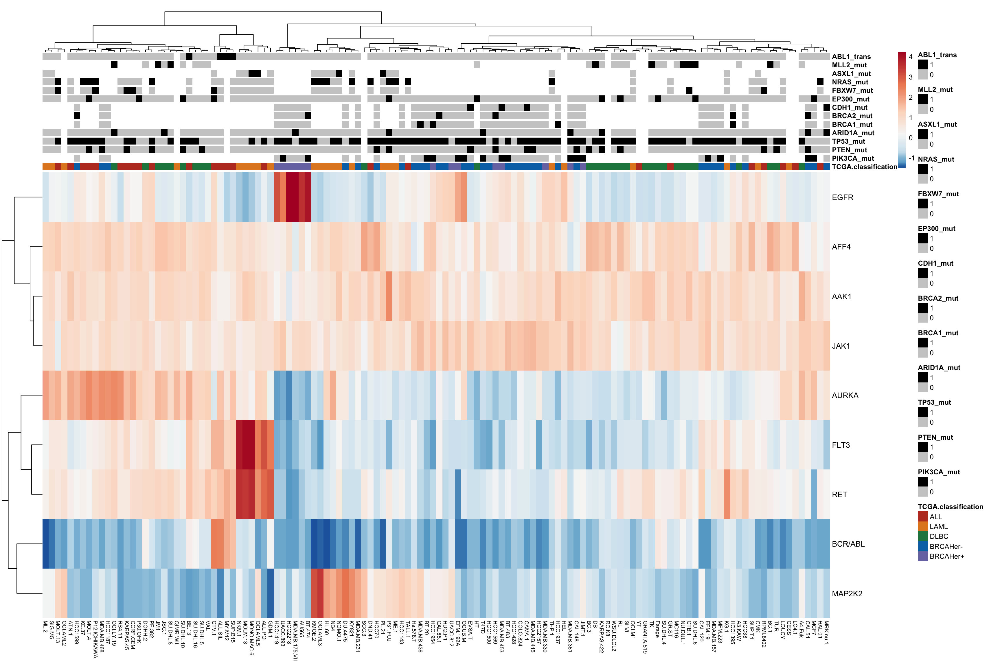
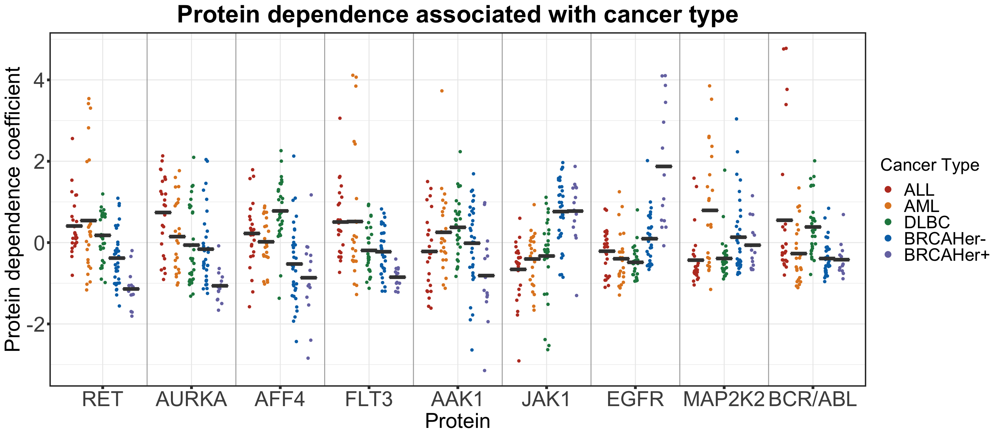
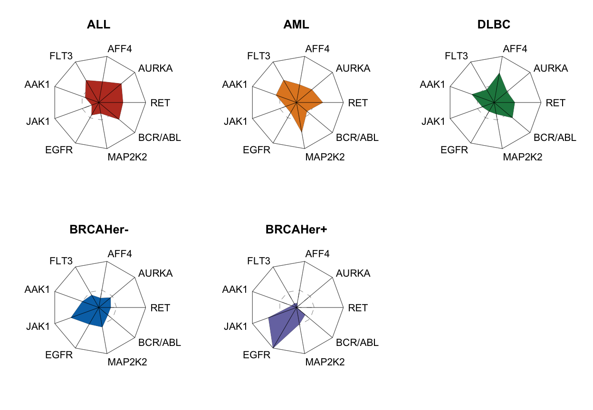
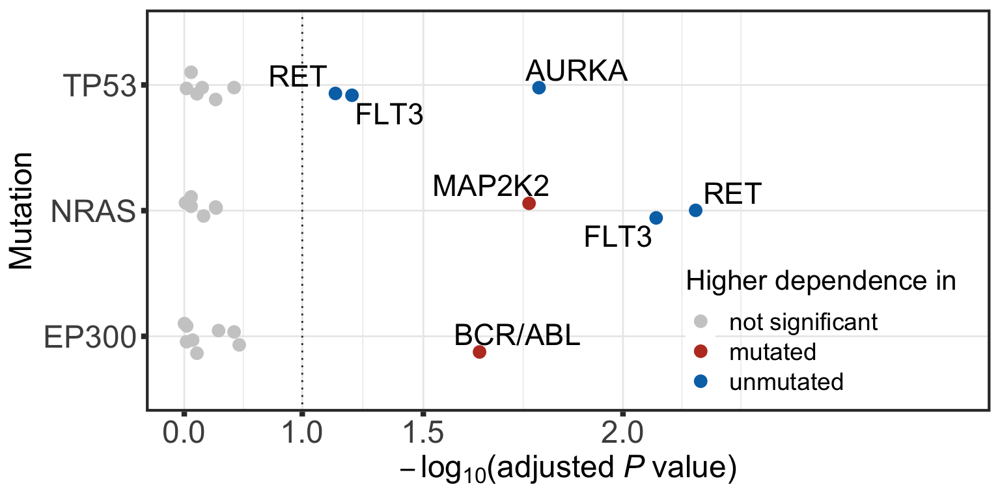
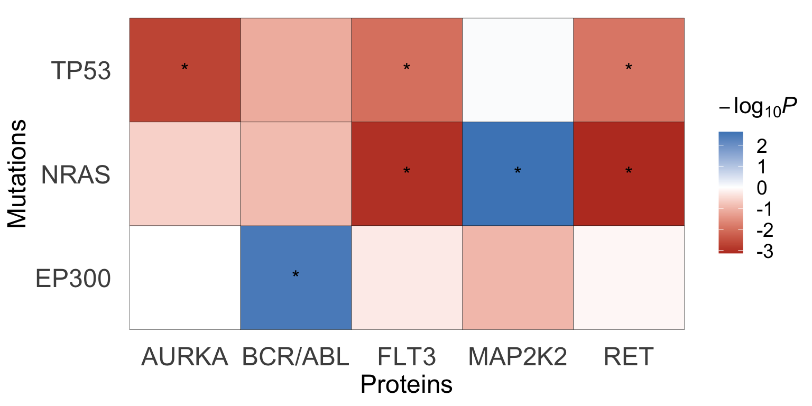

Pre-processing GDSC drug screen datasets
Junyan Lu
2021-10-05
Last updated: 2021-12-24
Checks: 6 1
Knit directory: DepInfeR/analysis/
This reproducible R Markdown analysis was created with workflowr (version 1.7.0). The Checks tab describes the reproducibility checks that were applied when the results were created. The Past versions tab lists the development history.
The R Markdown is untracked by Git. To know which version of the R Markdown file created these results, you’ll want to first commit it to the Git repo. If you’re still working on the analysis, you can ignore this warning. When you’re finished, you can run wflow_publish to commit the R Markdown file and build the HTML.
Great job! The global environment was empty. Objects defined in the global environment can affect the analysis in your R Markdown file in unknown ways. For reproduciblity it’s best to always run the code in an empty environment.
The command set.seed(20211005) was run prior to running the code in the R Markdown file. Setting a seed ensures that any results that rely on randomness, e.g. subsampling or permutations, are reproducible.
Great job! Recording the operating system, R version, and package versions is critical for reproducibility.
Nice! There were no cached chunks for this analysis, so you can be confident that you successfully produced the results during this run.
Great job! Using relative paths to the files within your workflowr project makes it easier to run your code on other machines.
Great! You are using Git for version control. Tracking code development and connecting the code version to the results is critical for reproducibility.
The results in this page were generated with repository version 43be8a7. See the Past versions tab to see a history of the changes made to the R Markdown and HTML files.
Note that you need to be careful to ensure that all relevant files for the analysis have been committed to Git prior to generating the results (you can use wflow_publish or wflow_git_commit). workflowr only checks the R Markdown file, but you know if there are other scripts or data files that it depends on. Below is the status of the Git repository when the results were generated:
Ignored files:
Ignored: .DS_Store
Ignored: .Rhistory
Ignored: .Rproj.user/
Ignored: analysis/.DS_Store
Ignored: analysis/.Rhistory
Ignored: analysis/analysis_RNAseq_cache/
Ignored: data/.DS_Store
Ignored: output/.DS_Store
Untracked files:
Untracked: analysis/analysis_EMBL2016.Rmd
Untracked: analysis/analysis_GDSC.Rmd
Untracked: analysis/analysis_RNAseq.Rmd
Untracked: analysis/analysis_beatAML.Rmd
Untracked: analysis/process_EMBL2016.Rmd
Untracked: analysis/process_GDSC.Rmd
Untracked: analysis/process_beatAML.Rmd
Untracked: analysis/process_kinobeads.Rmd
Untracked: code/utils.R
Untracked: data/BeatAML/
Untracked: data/EMBL2016/
Untracked: data/GDSC/
Untracked: data/Kinobeads/
Untracked: data/RNAseq/
Untracked: manuscript/
Untracked: output/BeatAML_result.RData
Untracked: output/EMBL_result.RData
Untracked: output/EMBL_resultSub.RData
Untracked: output/GDSC_result.RData
Untracked: output/allTargets.rds
Untracked: output/inputs_BeatAML.RData
Untracked: output/inputs_EMBL.RData
Untracked: output/inputs_GDSC.RData
Unstaged changes:
Modified: README.md
Modified: _workflowr.yml
Modified: analysis/_site.yml
Deleted: analysis/about.Rmd
Modified: analysis/index.Rmd
Deleted: analysis/license.Rmd
Deleted: output/README.md
Note that any generated files, e.g. HTML, png, CSS, etc., are not included in this status report because it is ok for generated content to have uncommitted changes.
There are no past versions. Publish this analysis with wflow_publish() to start tracking its development.
Load packages
Packages
library(depInfeR)
library(RColorBrewer)
library(pheatmap)
library(ggbeeswarm)
library(ggrepel)
library(tidyverse)
source("../code/utils.R")
knitr::opts_chunk$set(dev = c("png","pdf"))Load pre-processed datasets
load("../output/inputs_GDSC.RData")Dimensions of input matrices
Drug-target
dim(tarMat_GDSC)[1] 66 118Drug-sample (viability matrix)
dim(viabMat_GDSC)[1] 66 126Multivariant model for protein dependence prediction
Perform multivariant LASSO regression based on a drug-protein affinity matrix and a drug response matrix.
This chunk can take a long time to run. Therefore we will save the result for later use to save time.
result <- runLASSOregression(TargetMatrix = tarMat_GDSC, ResponseMatrix = viabMat_GDSC, seed = 333)
#remove targets that were never selected
useTar <- rowSums(result$coefMat) != 0
result$coefMat <- result$coefMat[useTar,]
#save intermediate results
save(result, file = "../output/GDSC_result.RData")Load the saved result
load("../output/GDSC_result.RData")Number of selected targets
nrow(result$coefMat)[1] 9Heatmap plots of protein dependence matrix
The protein dependence matrix can be nicely visualized in a heatmap. High positive coefficients imply strong reliance of a certain sample on this protein for survival. Proteins with coefficients close to zero are less essential for the cell’s survival. Negative coefficients indicate that the viability phenotype benefits from inhibition of the protein.
Heatmap of protein dependence coefficients
annoColor <- list(H2O2 = c(`-1` = "red", `0` = "black", `1` = "green"),
IL.1 = c(`-1` = "red", `0` = "black", `1` = "green"),
JAK.STAT = c(`-1` = "red", `0` = "black", `1` = "green"),
MAPK.only = c(`-1` = "red", `0` = "black", `1` = "green"),
MAPK.PI3K = c(`-1` = "red", `0` = "black"),
TLR = c( `-1` = "red", `0` = "black", `1` = "green"),
Wnt = c(`-1` = "red", `0` = "black", `1` = "green"),
VEGF = c(`-1` = "red", `0` = "black", `1` = "green"),
PI3K.only = c(`-1` = "red", `0` = "black", `1` = "green"),
TCGA.classification = c(ALL="#BC3C29FF",AML="#E18727FF",DLBC="#20854EFF","BRCAHer-"="#0072B5FF",'BRCAHer+'="#7876B1FF"),
ARID1A_mut = c(`1` = "black",`0` = "grey80"),
EP300_mut = c(`1` = "black",`0` = "grey80"),
PTEN_mut = c(`1` = "black",`0` = "grey80"),
TP53_mut = c(`1` = "black",`0` = "grey80"),
PIK3CA_mut = c(`1` = "black",`0` = "grey80"),
BRCA2_mut = c(`1` = "black",`0` = "grey80"),
BRCA1_mut = c(`1` = "black",`0` = "grey80"),
CDH1_mut = c(`1` = "black",`0` = "grey80"),
FBXW7_mut = c(`1` = "black",`0` = "grey80"),
NRAS_mut = c(`1` = "black",`0` = "grey80"),
ASXL1_mut = c(`1` = "black",`0` = "grey80"),
MLL2_mut = c(`1` = "black",`0` = "grey80"),
ABL1_trans = c(`1` = "black",`0` = "grey80"),
missing_value_perc = c(`0` = "white",`25` = "red")
)
plotTab <- result$coefMat
#Row normalization while keeping sign
plotTab_scaled <- scale(t(plotTab), center = FALSE, scale= TRUE)
plotTab <- t(plotTab_scaled)
levels(mutation_GDSC$TCGA.classification) <- c(levels(mutation_GDSC$TCGA.classification), "BRCAHer-")
mutation_GDSC$TCGA.classification[mutation_GDSC$TCGA.classification=="BRCA"] <- "BRCAHer-"
mutation_GDSC$TCGA.classification <- factor(mutation_GDSC$TCGA.classification, levels = c("ALL", "AML", "DLBC", "BRCAHer-", "BRCAHer+"))
mutation_GDSC$missing_value_perc <- NULL
pheatmap(plotTab,
color=colorRampPalette(rev(brewer.pal(n = 7, name = "RdBu")), bias= 1.8)(100),
annotation_col = mutation_GDSC,
annotation_colors = annoColor,
clustering_method = "ward.D2", scale = "none",
show_colnames = TRUE, main = "", fontsize = 9, fontsize_row = 10, fontsize_col = 7)
Differential dependence on proteins associated with cancer types and genotypes
Prepare genomic background table
cell_anno_final <- mutation_GDSC %>%
#dplyr::select(-missing_value_perc) %>%
dplyr::rename(cancer_type = TCGA.classification) %>%
dplyr::filter(rownames(mutation_GDSC) %in% colnames(result$coefMat))
colnames(cell_anno_final) <- str_remove_all(colnames(cell_anno_final),"_mut")
colnames(cell_anno_final) <- str_replace_all(colnames(cell_anno_final),"_trans","_translocation")Association test between protein dependence and cancer type or mutational background
testRes <- diffImportance(result$coefMat, cell_anno_final)Visualize protein associations with cancer type
CancerType <- testRes %>% dplyr::filter(mutName == "cancer_type") %>% dplyr::filter(p.adj < 0.05, FC > 0.1)
plotTab <- t(scale(t(result$coefMat))) %>% data.frame() %>%
rownames_to_column("target") %>% gather(key = "CellLine", value = "coef",-target) %>% mutate(Cancer_Type = mutation_GDSC[CellLine,]$TCGA.classification) %>%
group_by(target, Cancer_Type) %>% mutate(meanCoef = mean(coef)) %>% arrange(meanCoef) %>% ungroup() %>%
mutate(target = factor(target, levels = unique(target)))
plotTab <- plotTab %>% dplyr::filter(target %in% CancerType$targetName)
plotTab$Cancer_Type <- factor(plotTab$Cancer_Type, levels = c("ALL", "AML","DLBC", "BRCAHer-", "BRCAHer+"))
ggplot(plotTab, aes(x = target, y = coef, group=Cancer_Type)) +
geom_jitter(
aes(color = Cancer_Type),
position = position_jitterdodge(jitter.width = 0.2, dodge.width = 0.8),
size = 1.2
) +
stat_summary(
fun= mean, fun.min=mean, fun.max=mean, colour="grey25",
geom = "crossbar", size = 0.8,
position = position_dodge(0.8)
) +
scale_color_manual(values= c("#BC3C29FF","#E18727FF","#20854EFF","#0072B5FF","#7876B1FF"),
guide = guide_legend(override.aes = list(size = 3) )) +
ggtitle("Protein dependence associated with cancer type") + ylab("Protein dependence coefficient") + xlab("Protein") + theme_bw() +
theme_custom + geom_vline(xintercept =seq(from = 1.5, to = 8.5, by = 1), color="darkgrey") + labs(color = "Cancer Type")
Radar plot visualization
starMatrix <- plotTab %>% dplyr::select(target, Cancer_Type, meanCoef) %>% distinct()
starMatrix <- starMatrix %>% pivot_wider(names_from = target, values_from = meanCoef)
starMatrix <- starMatrix %>% mutate(Cancer_Type = factor(Cancer_Type, levels = c("ALL", "AML","DLBC", "BRCAHer-", "BRCAHer+"))) %>% arrange(Cancer_Type)
starMatrix <- starMatrix %>% column_to_rownames("Cancer_Type")
starMatrix_norm <- (as.matrix(starMatrix) + abs(min(starMatrix)))
zeroValue <-abs(min(starMatrix)) / max(starMatrix_norm)
starMatrix_norm <- starMatrix_norm/ max(starMatrix_norm)
#function for a single star plot
starPlot <- function(dataIn, sampleName,zeroVal, color='red') {
stopifnot(is.matrix(dataIn) & nrow(dataIn) == 1)
#data for outer ring
outer <- dataIn
outer[!is.na(outer)] <- 1
#data for inner ring
inner <- dataIn
inner[!is.na(inner)] <- zeroVal
#plotting
stars(outer, draw.segments = FALSE, scale=FALSE, full=TRUE, locations=c(1,1), mar = c(4,4,4,4), main=sampleName, cex=0.5) #plot the outter ring
stars(inner, draw.segments = FALSE, scale=FALSE, full=TRUE, locations=c(1,1), lty =2 ,add=TRUE) #plot the inner ring
stars(dataIn, col.stars=color, draw.segments = FALSE, scale=FALSE, full=TRUE, key.loc = c(1,1), key.labels = colnames(dataIn), location=c(1,1), add=TRUE,cex=1) #plot the actual data
}
starColor <- c("#BC3C29FF","#E18727FF","#20854EFF","#0072B5FF","#7876B1FF") #define color scheme
par(mfrow=c(2,3)) #layout in 3 X 3 format
for (i in seq(1,nrow(starMatrix_norm))) {
dataIn <- starMatrix_norm[i, ,drop=FALSE]
sampleName <- rownames(starMatrix_norm)[i]
starCol <- starColor[i]
starPlot(dataIn,sampleName,zeroValue, starCol)
} 
Visualize significant associations between protein dependence and mutational background
colList2 <- c(`not significant` = "grey80", mutated = "#BC3C29FF", unmutated = "#0072B5FF")
pos = position_jitter(width = 0.15, seed = 10)
plotTab <- testRes %>% dplyr::filter(mutName != "cancer_type") %>% mutate(type = ifelse(p.adj > 0.1, "not significant",
ifelse(FC >0, "mutated","unmutated"))) %>%
mutate(varName = ifelse(type == "not significant","",targetName)) %>%
mutate(p.adj = ifelse(p.adj <1e-5, 1e-5,p.adj))
#subset for mutation with at least one significant associations
plotMut <- unique(filter(testRes, p.adj <= 0.1)$mutName)
plotTab <- plotTab %>% dplyr::filter(mutName %in% plotMut)
plotTab$type <- factor(plotTab$type, levels = c("mutated", "unmutated", "not significant"))
p <- ggplot(data=plotTab, aes(x= mutName, y=-log10(p.adj),
col=type, label = varName))+
geom_text_repel(position = pos, color = "black", size= 6, force = 3) +
geom_hline(yintercept = -log10(0.1), linetype="dotted", color = "grey20") +
geom_point(size=3, position = pos) +
ylab(expression(-log[10]*'('*adjusted~italic("P")~value*')')) + xlab("Mutation") +
scale_color_manual(values = colList2) +
scale_y_continuous(trans = "exp", limits = c(0,2.5), breaks = c(0,1,1.5,2)) +
theme_custom +
#annotate(geom = "text", x = 0.5, y = -log10(0.1) - 0.25, label = "10% FDR", size=7, col = "grey20") +
coord_flip() + labs(col = "Higher dependence in") +
theme(legend.position = c(0.80,0.2),
legend.background = element_rect(fill = NA),
legend.text = element_text(size=14),
legend.title = element_text(size=16),
axis.title = element_text(size=18),
axis.text = element_text(size=18))
plot(p)
#ggsave("test.pdf",height = 4, width = 8)Visualize significant associations using a heatmap
plotTab <- testRes %>% dplyr::filter(mutName != "cancer_type") %>%
mutate(starSign = ifelse(p.adj <=0.1, "*", ""),
pSign = -log10(p)*sign(FC))
#subset for mutation with at least one significant associations
plotTar <- unique(filter(plotTab, p.adj <= 0.1)$targetName)
plotMut <- unique(filter(plotTab, p.adj <= 0.1)$mutName)
plotTab <- plotTab %>% dplyr::filter( targetName %in% plotTar , mutName %in% plotMut)
p <- ggplot(data=plotTab, aes(y=mutName, x = targetName, fill=pSign)) +
geom_tile(col = "black") + geom_text(aes(label = starSign), size=5, vjust=0.5) +
scale_fill_gradient2(low = "#BC3C29FF", high = "#0072B5FF", name = bquote(-log[10]*italic("P"))) +
theme_minimal() +
theme(panel.grid.major = element_blank(),
legend.text = element_text(size=14),
legend.title = element_text(size=16),
axis.title = element_text(size=18),
axis.text = element_text(size=18)) +
ylab("Mutations") + xlab("Proteins")
p
Visualization of exemplary association between NRAS mutation status and MAP2K2 dependence visualized in a beeswarm plot
pList <- plotDiffBox(testRes, result$coefMat, cell_anno_final, 0.05)
pList$MAP2K2_NRAS
sessionInfo()R version 4.1.2 (2021-11-01)
Platform: x86_64-apple-darwin17.0 (64-bit)
Running under: macOS Big Sur 10.16
Matrix products: default
BLAS: /Library/Frameworks/R.framework/Versions/4.1/Resources/lib/libRblas.0.dylib
LAPACK: /Library/Frameworks/R.framework/Versions/4.1/Resources/lib/libRlapack.dylib
locale:
[1] en_US.UTF-8/en_US.UTF-8/en_US.UTF-8/C/en_US.UTF-8/en_US.UTF-8
attached base packages:
[1] stats graphics grDevices utils datasets methods base
other attached packages:
[1] forcats_0.5.1 stringr_1.4.0 dplyr_1.0.7 purrr_0.3.4
[5] readr_2.1.1 tidyr_1.1.4 tibble_3.1.6 tidyverse_1.3.1
[9] ggrepel_0.9.1 ggbeeswarm_0.6.0 ggplot2_3.3.5 pheatmap_1.0.12
[13] RColorBrewer_1.1-2 depInfeR_0.1.0
loaded via a namespace (and not attached):
[1] httr_1.4.2 sass_0.4.0 jsonlite_1.7.2 splines_4.1.2
[5] foreach_1.5.1 modelr_0.1.8 bslib_0.3.1 assertthat_0.2.1
[9] highr_0.9 cellranger_1.1.0 vipor_0.4.5 yaml_2.2.1
[13] pillar_1.6.4 backports_1.4.1 lattice_0.20-45 glue_1.5.1
[17] rlist_0.4.6.2 digest_0.6.29 promises_1.2.0.1 rvest_1.0.2
[21] colorspace_2.0-2 htmltools_0.5.2 httpuv_1.6.4 Matrix_1.4-0
[25] pkgconfig_2.0.3 broom_0.7.10 haven_2.4.3 scales_1.1.1
[29] later_1.3.0 tzdb_0.2.0 git2r_0.29.0 farver_2.1.0
[33] generics_0.1.1 ellipsis_0.3.2 withr_2.4.3 cli_3.1.0
[37] survival_3.2-13 magrittr_2.0.1 crayon_1.4.2 readxl_1.3.1
[41] evaluate_0.14 fs_1.5.2 fansi_0.5.0 doParallel_1.0.16
[45] xml2_1.3.3 beeswarm_0.4.0 tools_4.1.2 data.table_1.14.2
[49] hms_1.1.1 lifecycle_1.0.1 matrixStats_0.61.0 reprex_2.0.1
[53] munsell_0.5.0 glmnet_4.1-3 compiler_4.1.2 jquerylib_0.1.4
[57] rlang_0.4.12 grid_4.1.2 rstudioapi_0.13 iterators_1.0.13
[61] labeling_0.4.2 rmarkdown_2.11 gtable_0.3.0 codetools_0.2-18
[65] DBI_1.1.1 R6_2.5.1 lubridate_1.8.0 knitr_1.36
[69] fastmap_1.1.0 utf8_1.2.2 workflowr_1.7.0 rprojroot_2.0.2
[73] shape_1.4.6 stringi_1.7.6 parallel_4.1.2 Rcpp_1.0.7
[77] vctrs_0.3.8 dbplyr_2.1.1 tidyselect_1.1.1 xfun_0.29